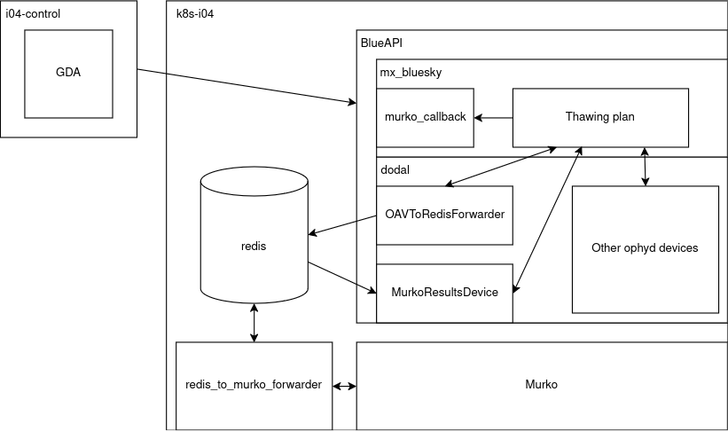

Murko Architecture#
The architecture of how Murko is integrated is still in flux but as of 07/08 the following has been tried on the beamline.
The mx-bluesky code is deployed into the beamline kubernetes cluster behind a blueAPI REST interface. Alongside this an instance of murko is also deployed to the k8s cluster.
When GDA reaches a point where it will thaw the pin (usually just after robot load), if the gda.mx.bluesky.thaw property has been set to True it will instead call out to the thaw_and_center plan inside mx-bluesky.
The thawing plan will first create a MurkoCallback callback, this will stream metadata into a key in a redis database running on i04-control (this should be moved in #145).
It will then trigger the OAVToRedisForwarder device in dodal that will stream image data to redis in the form of pickled RGB numpy arrays. Each image is given a uuid by this device, which is used to correlate the images with the other metadata, which could be streamed with a different frequency.
The image streaming must be done with an ophyd device as there is too much data for it all to be emitted in bluesky documents.
When the data is entered into redis it will publish a message to the redis murko channel. This will get picked up by the socket_handler, which will forward the data to murko. Currently, during testing the socket_handler is just manually run on a workstation, #146 should fix this.